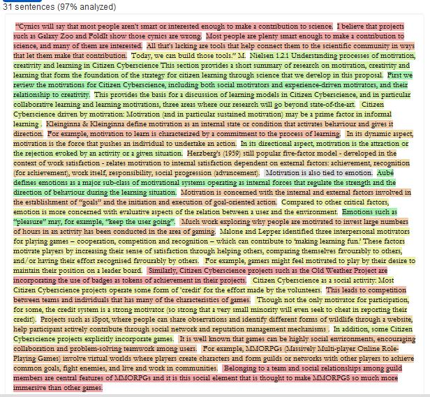

 In this culture of copy and remix, this small app uses a search engine (Bing) to check each sentence and compute a 'copy' score at a sentence and text level.
strategy to query the search engine:
Note Due to text analysis, only english text is for the moment available.
Source code: this page (pure javascript)
credits: NM